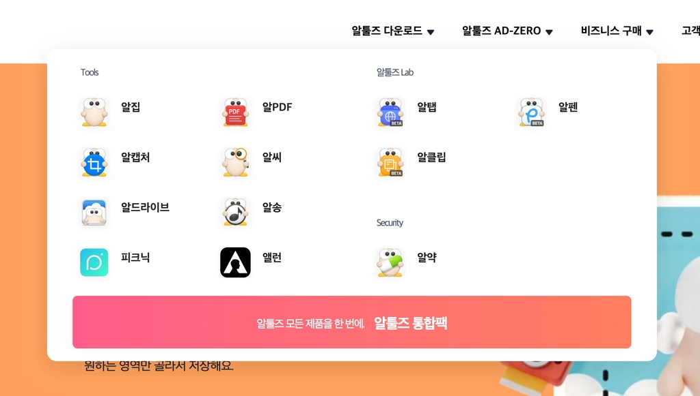
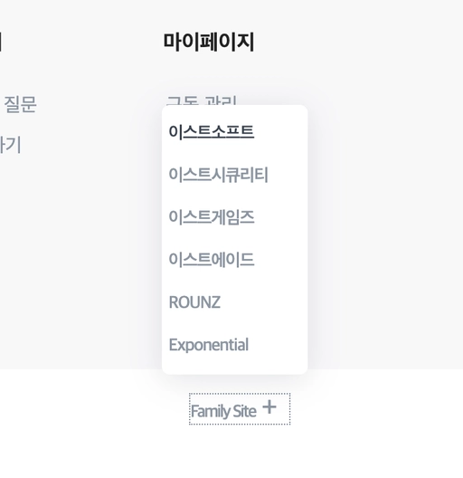
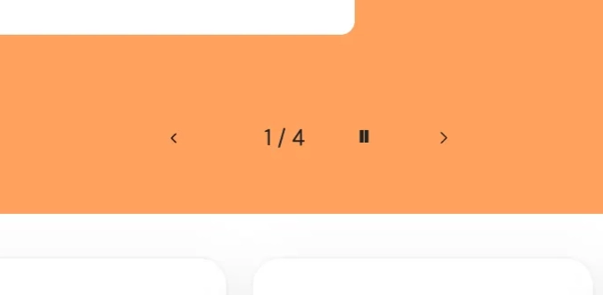
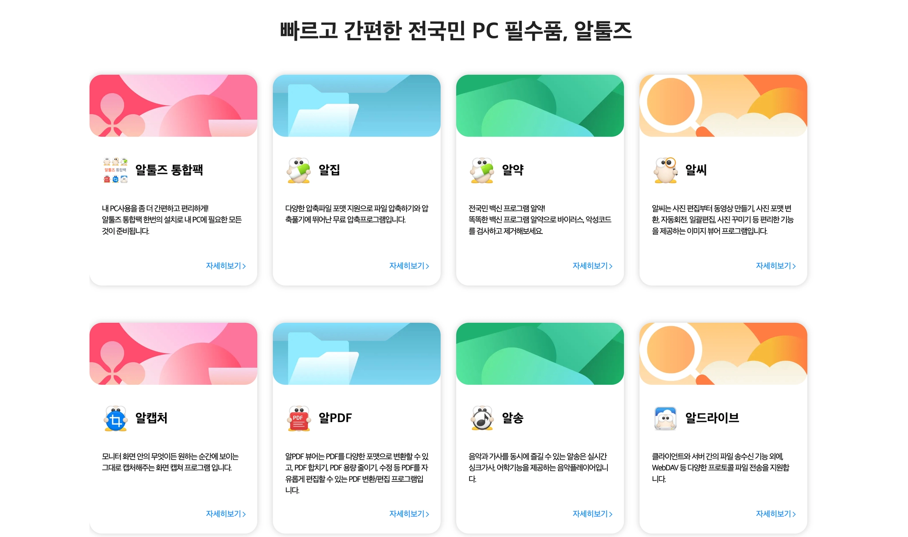
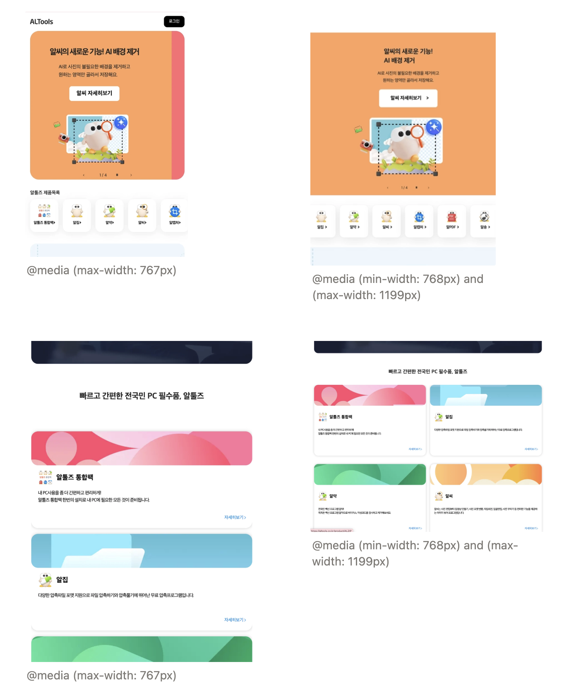

ALTools
A front-end sandbox built to test how motion, modular components, and responsive behavior shape the way people experience an interface.

The Brief
Unlike a redesign or clone, ALTools was built as a sandbox for testing UI behavior — motion design, component interaction, layout clarity, animation timing, and responsive behavior across devices. The goal was to see how motion affects perception, and how components can stay modular and reusable while still feeling right on desktop, tablet, and mobile.
Process
-
01Research & Concept Planning
- Studied common UI patterns and picked components suited to animation practice
- Defined interaction goals — hover, slider, transitions — and responsive requirements per breakpoint
-
02Wireframing & Motion Planning
- Simple wireframes focused on component structure and spacing hierarchy
- Planned motion behavior per element and mapped layout adjustments for tablet/mobile
-
03Build
- Semantic HTML/CSS layout with JS/jQuery-driven components
- Created custom dropdown menu with accessibility features (mouse hover + keyboard navigation)


Custom dropdown menus, built for both mouse hover and keyboard navigation.- Integrated Slick Slider with custom controls: custom control bar with prev/next navigation, play/pause toggle, real-time slide index display

Custom prev / next / play-pause control bar with a live slide index (1/4).- 2-row 4-column grid slider layout for product showcase

Product cards arranged in a 2-row, 4-column responsive grid.- Custom responsive breakpoints — desktop hover states, tablet simplified interactions, mobile (767px and below) touch-optimized with dynamic slider activation for performance

Layout behavior compared across mobile, tablet, and desktop breakpoints. -
04QA & Refinement
- Tuned animation timing, tested touch interactions across devices
- Verified keyboard navigation and ARIA labels, cleaned up cross-browser inconsistencies
Key Decisions
What I Learned
This project sharpened my sense of how motion affects perception and strengthened my ability to build modular, reusable UI. I got hands-on with responsive strategy across custom breakpoints, device-specific interaction patterns, performance-conscious component initialization, and basic accessibility practices like ARIA labels and keyboard navigation.